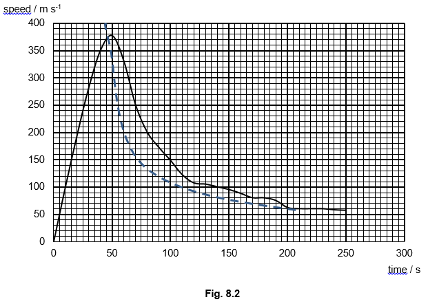

| |
In 2012 skydiver Felix Baumgartner jumped out of a helium-filled balloon from a height of 39 km above sea level. His free fall of over 36 km lasted 4 minutes and 20 seconds. In this free fall, he became the first person whose speed exceeded the speed of sound 330 \(m\ s^{-1} \), without the use of an aeroplane or rocket.
During the fall, Felix Baumgartner opened his parachute at about 1500 m above sea level, when his speed is 192 \(km\ hr^{-1} \), and he landed safely 15 minutes later. All height and speeds were recorded by GPS.
Some data on the air atmosphere and helium is collected and given in Fig. 8.1.
| sea level | 39 km above sea level |
|---|
| Temperature of atmosphere / \(^oC \) | 15 | -25 |
| Atmospheric pressure / Pa | 101 000 | 318 |
| Air density | - | 0.00447 |
| Helium density / \(kg\ m^{-3} \) | - | 0.00065 |
Fig.8.1
|
| (a) | |
Using data given in Fig. 8.1, determine the minimum volume of helium required in the balloon at sea level, for a skydiver in the helium-filled balloon to reach a height of 39 km above sea level at constant speed. Assume that the total mass of the skydiver and the helium-filled balloon is 3140 kg, and that helium behaves as an ideal gas.
|
|
| |
\( \sum F \)= 0 (since speed is constant)
Upthrust – weight of skydiver = 0
V(0.00447)g – 3140g = 0
V = 7.02 \(\times 10^5 \ m^3 \)
\( \frac{P_1V_1}{T_1} = \frac{P_2V_2}{T_2} \Rightarrow \frac{101000\ V_1}{15+273}= \frac{318\ 7.02x10^5}{-25+273} \)
\( V_1 = 2600\ m^3 \)
(Solution if assume weight of helium unknown)
\( \sum F \)= 0
U – 3140g – weight of helium air in balloon = 0
V(0.00447)g – 3140g – V(0.00065)g = 0
V = 8.2 \( \times 10^5 \ m^3 \)
\( \frac{P_1V_1}{T_1} = \frac{P_2V_2}{T_2} \Rightarrow \frac{101000\ V_1}{15+273}= \frac{318\ 8.2x10^5}{-25+273} \)
\( V_1 = 3000\ m^3 \)
|
| |
Two main forces acting on the skydiver of mass m are his weight and air resistance. The air resistance F can be written as follows
$$ F = \frac{1}{2} C_D\ A\ \rho\ v^2 $$
where \( \rho \) is the density of air, A is effective cross-sectional area and \( C_D \) is the drag coefficient.
|
| (b) | (i) |
Show that the terminal speed \(v_T\) that can be achieved by the skydiver as he falls is given by
$$ v_T = \sqrt{\frac{2mg}{C_DA\rho}} $$
|
|
| |
At terminal speed, net force = 0
F – mg = 0
mg = \(\frac{1}{2} C_D\ A\ \rho\ v_T^2 \)
|
| (ii) |
Explain why the skydiver’s terminal speed will not be constant as he falls.
|
|
| |
The air density will increase as he falls.
|
| (c) | |
The acceleration a of the sky diver when he is falling at a speed v is given by
$$ a = g\Bigl(\frac{v^2}{v_T^2}-1) $$
The variation of the skydiver’s speed with time as he falls is shown in Fig 8.2. The terminal speed \(v_T\) based on the expression given in (b)(i) is also plotted in Fig. 8.2 (denoted by the dashed line).

|
| (i) |
Deduce from Fig 8.2 the duration of time when the skydiver exceeds the speed of sound during his fall.
|
|
| |
Duration is about 22 – 24 s.
|
| (ii) |
Use Fig 8.2 to determine the total distance fallen when the sky diver reaches his maximum speed.
|
|
| |
Total distance = area under the graph
Acceptable range = 10500 – 12500 m
|
| (iii) |
Using Fig. 8.2 and Equation 8.1, describe and explain the variation in the speed of the skydiver from time = 50 s to 250 s.
|
|
| |
The speed of the skydiver is decreasing from 50 s – 200 s. Since his speed is greater than terminal speed, based on Equation 8.1, the acceleration is negative causing his speed to decrease until \( V =V_T \). He reached an almost constant speed from 200 – 250 s
|
| (d) | (i) |
Suggest why a helium-filled balloon is used to bring the skydiver to a height of 39 km above sea level, instead of using an aircraft.
|
|
| |
The density of the air is too small to generate enough lift force at this height.
|
| (ii) |
Suggest a major health hazard to the skydiver at such a high attitude, even with the use of oxygen supply.
|
|
| |
1) Due to the extreme low pressure, his blood will boil.
OR
2) Exposure to comics rays/dangerous radiation causing cancers.
3) Unknown virus from space.
|